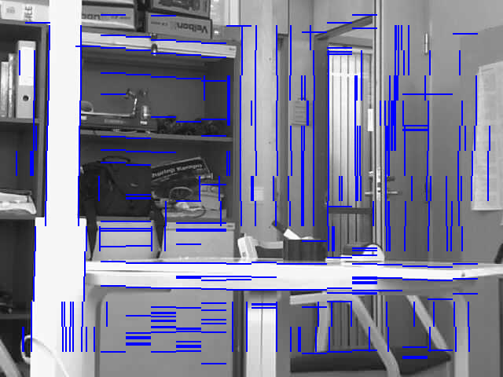
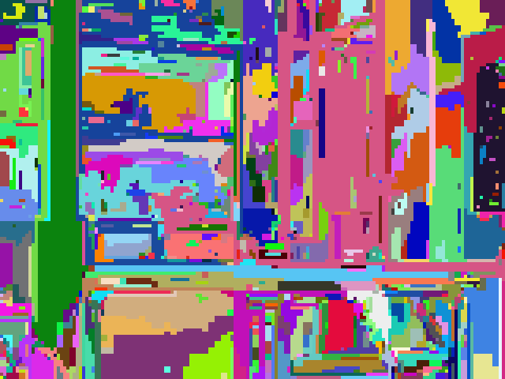
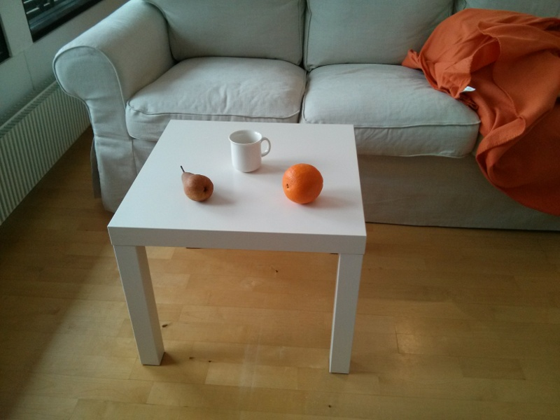

Computer Vision for Scene Understanding
CVSU is a Computer Vision library for Scene Understanding. I am developing it as part of my doctoral thesis project, and the goal is to offer easy to use, high-level functionality for extracting structured information about visual scenes. This process can be seen as image parsing.
Planned features:
Some features for segmentation and motion tracking are working already, and in near future a new release will introduce first features for geometric analysis. The library is written in C, with Haskell bindings, and it can work on many platforms, including Android phones.
These images show some results for extremely fast and robust edge detection. It has been used succesfully also for extracting edge chains and straight lines. The method can be given a width that determines how long the edge segments must be at least to be detected.
This image shows some results for extremely fast and robust segmentation. It oversegments, but is quite simple. More advanced methods are under development, that will combine boundary and segment information and not oversegment so easily.
This image shows some first results for segmentation based on both boundaries and regions. It runs in real-time on Android phones.
This video demonstrates basic motion tracking. Motion detection is very fast and robust, and it can be made more sensitive. In near future it can be used for segmenting the outline of the moving objects, and for tracking paths of moving objects.